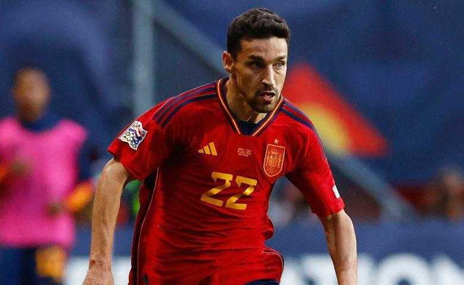

Mất 2 trụ cột, Tây Ban Nha vẫn có 'quân bài' thay thế hoàn hảo
edit by C&H
Tuesday 9 July 2024 15:00
Dù thiếu vắng hai trụ cột quan trọng là Pedri và Carvajal ở trận bán kết Euro 2024, Tây Ban Nha vẫn có những phương án thay thế chất lượng khác trong cuộc đại chiến với Pháp.
Đội tuyển Tây Ban Nha đang phải đối mặt với một thách thức lớn khi bước vào trận bán kết Euro 2024 gặp Pháp. Hai trụ cột quan trọng của đội là tiền vệ Pedri và hậu vệ phải Dani Carvajal sẽ không thể ra sân trong trận đấu này. Tuy nhiên, với chiều sâu đội hình đáng nể, La Roja vẫn có những phương án thay thế chất lượng để duy trì sức mạnh của mình.
Pedri - ngôi sao trẻ của Barcelona, đã bị chấn thương chỉ vài phút sau khi trận tứ kết gặp Đức bắt đầu, sau một pha va chạm với Toni Kroos. Trong khi đó, Carvajal - người đã có màn trình diễn xuất sắc trong trận chung kết Champions League mùa trước, bị treo giò do nhận thẻ đỏ trong trận đấu với Đức.
Mặc dù việc mất đi hai cầu thủ quan trọng như vậy có thể là một đòn giáng mạnh đối với nhiều đội bóng, nhưng Tây Ban Nha dưới sự dẫn dắt của huấn luyện viên Luis de la Fuente có vẻ như đã chuẩn bị sẵn sàng cho tình huống này.
Carvajal vắng mặt ở Bán kết do án treo giò. Ảnh: Getty.
Để thay thế Pedri ở hàng tiền vệ, De la Fuente nhiều khả năng sẽ sử dụng Dani Olmo. Tiền vệ tấn công 26 tuổi đang khoác áo RB Leipzig đã thể hiện phong độ ấn tượng khi vào sân thay Pedri trong trận tứ kết gặp Đức. Olmo đã đóng góp trực tiếp vào cả hai bàn thắng của Tây Ban Nha, ghi bàn mở tỷ số và kiến tạo cho bàn thắng quyết định của Mikel Merino. Màn trình diễn xuất sắc này của Olmo đã chứng minh rằng anh hoàn toàn có thể đảm nhận vai trò quan trọng trong lối chơi của Tây Ban Nha. Ở vị trí hậu vệ phải, Jesus Navas được xem là phương án thay thế hàng đầu cho Carvajal. Dù đã 38 tuổi, Navas vẫn duy trì được phong độ ổn định và có kinh nghiệm dày dặn ở cấp độ quốc tế. Khi được hỏi về việc để Navas đối đầu với ngôi sao Kylian Mbappe của Pháp, HLV De la Fuente tỏ ra tin tưởng:
"Không phải là tôi tin tưởng Jesus Navas, mà là Jesus Navas là người giỏi nhất. Cậu ấy có đủ sức để chơi trong một thời gian, cậu ấy là một cầu thủ tuyệt vời và tôi hoàn toàn tin tưởng vào cậu ấy".

Jesus Navas sẽ là phương án thay thế hoàn hảo cho Dani Carvajal.Ảnh: Getty.
"Mbappe là cầu thủ có thể áp đảo như Dembele hay Barcola, nên cần sự hỗ trợ và che chắn từ đồng đội. Hiện tại, tôi nghĩ rằng để ngăn chặn những cầu thủ này khi họ có bóng, toàn đội cần phối hợp chặt chẽ.Khi chúng tôi có bóng, chúng tôi sẽ cố gắng tận dụng điểm yếu của họ, có thể là trong giai đoạn phòng ngự".
Ngoài Navas, De la Fuente còn có thể cân nhắc sử dụng Nacho Fernandez ở vị trí hậu vệ phải, hoặc thậm chí là đưa Marc Cucurella sang chơi ở cánh đối diện.Sự linh hoạt trong việc sắp xếp đội hình là một trong những điểm mạnh của Tây Ban Nha tại giải đấu này.

JDani Olmo đã chứng tỏ được khả năng trong trận đấu với Đức ở Tứ kết vừa qua. Ảnh: Getty.
"Chúng tôi có nhiều sự linh hoạt và khả năng sắp xếp nhiều cầu thủ. Thật tuyệt khi có một đội hình tiêu biểu, nhưng mỗi trận đấu đều có sắc thái mà chúng tôi có thể hiểu là phải khác nhau".
Với những phương án thay thế chất lượng như Dani Olmo và Jesus Navas, cùng với chiến thuật linh hoạt của HLV De la Fuente, Tây Ban Nha vẫn được đánh giá cao trong trận bán kết gặp Pháp. Trận đấu này hứa hẹn sẽ là một cuộc đối đầu hấp dẫn giữa hai đội bóng hàng đầu châu Âu tại Euro 2024, diễn ra vào lúc 02h00 ngày 10/7 (giờ Việt Nam).